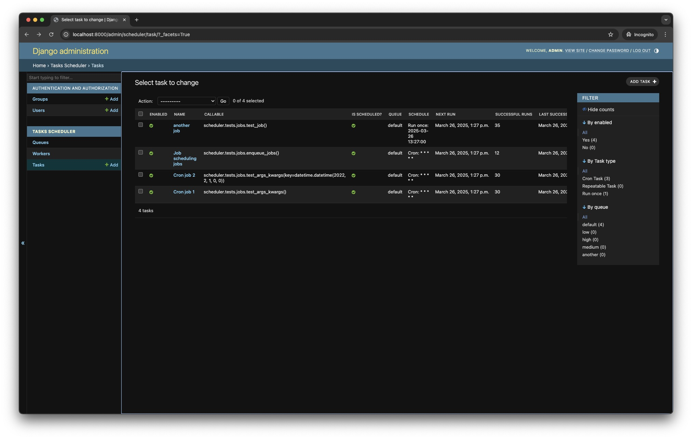
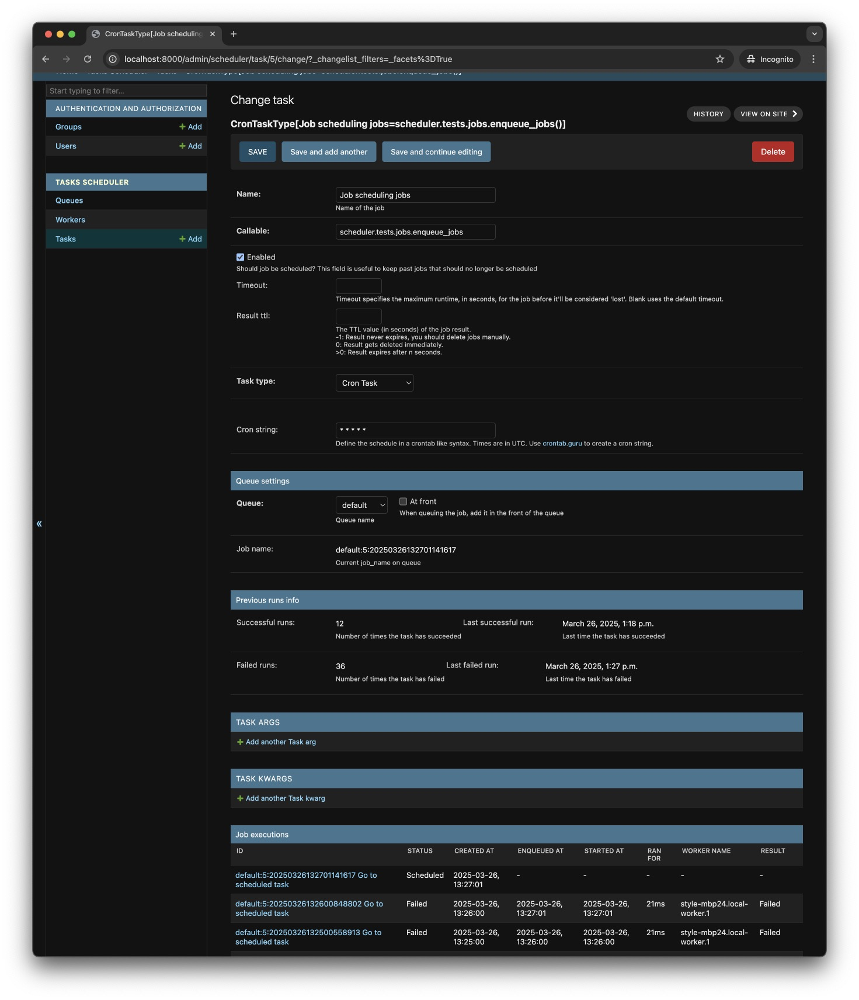
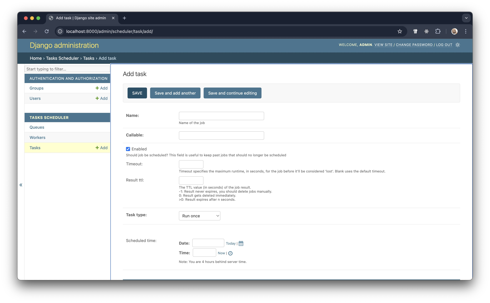
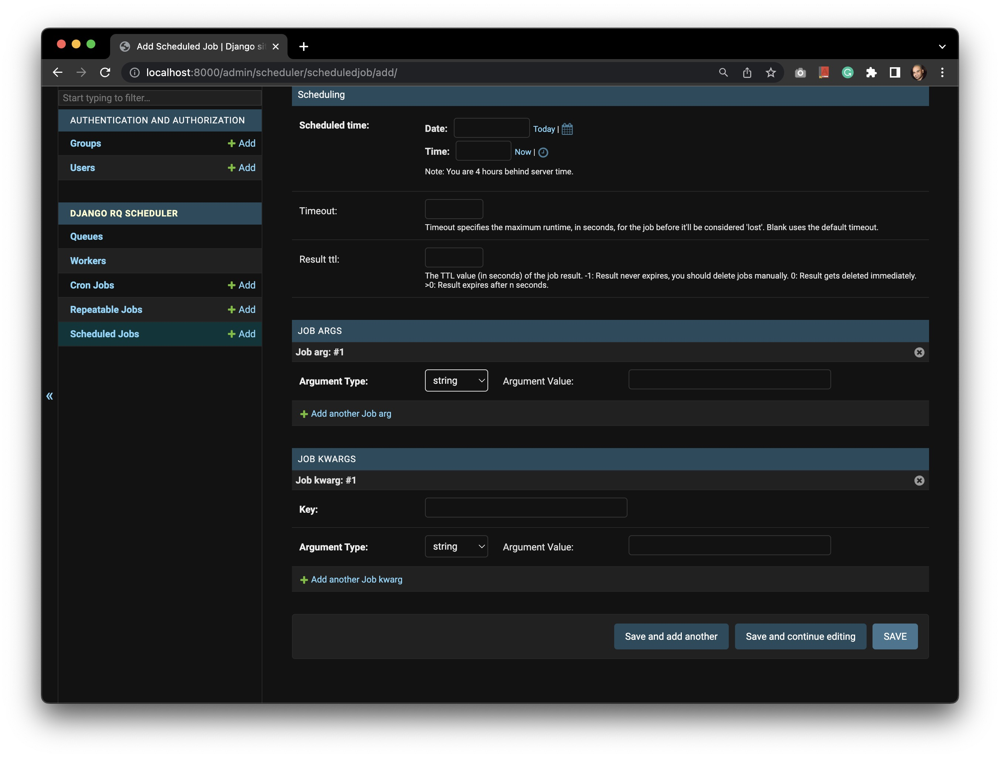
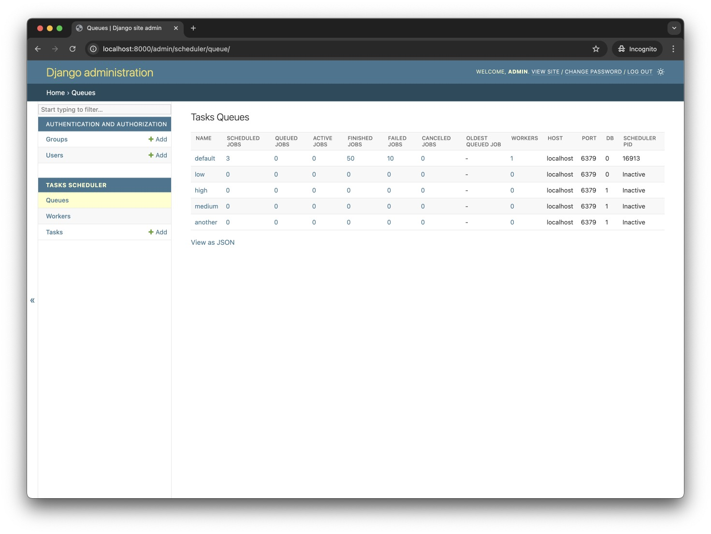
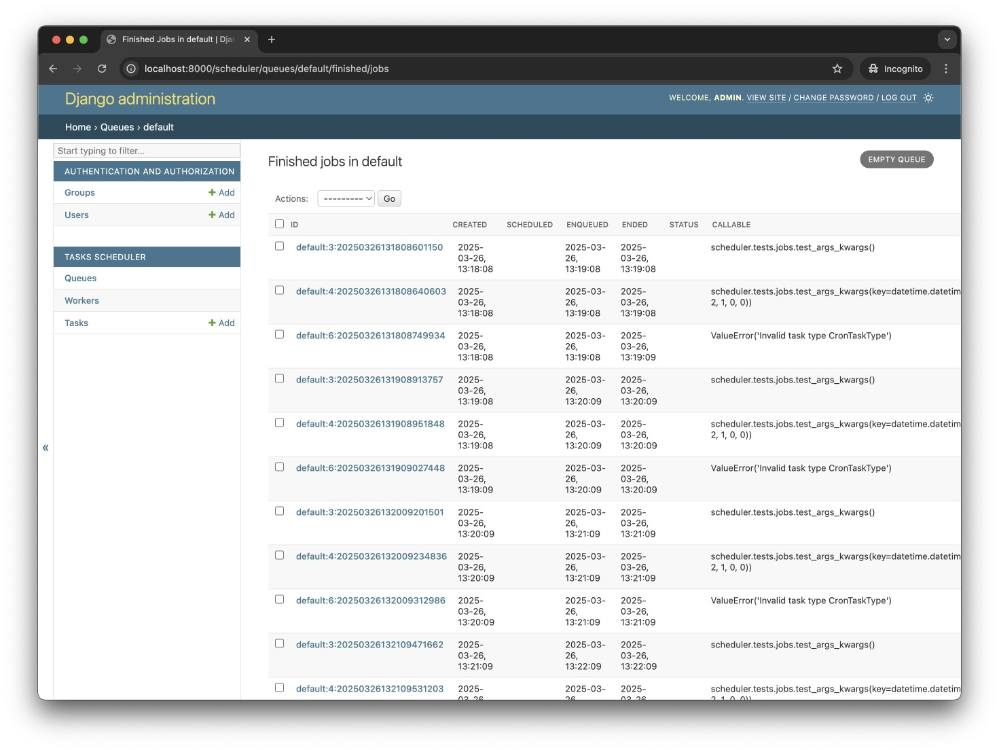
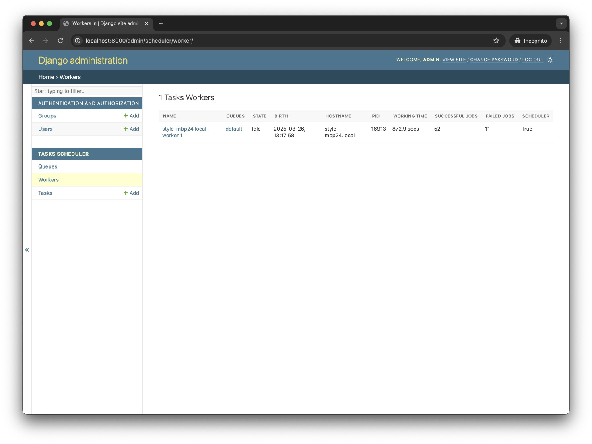
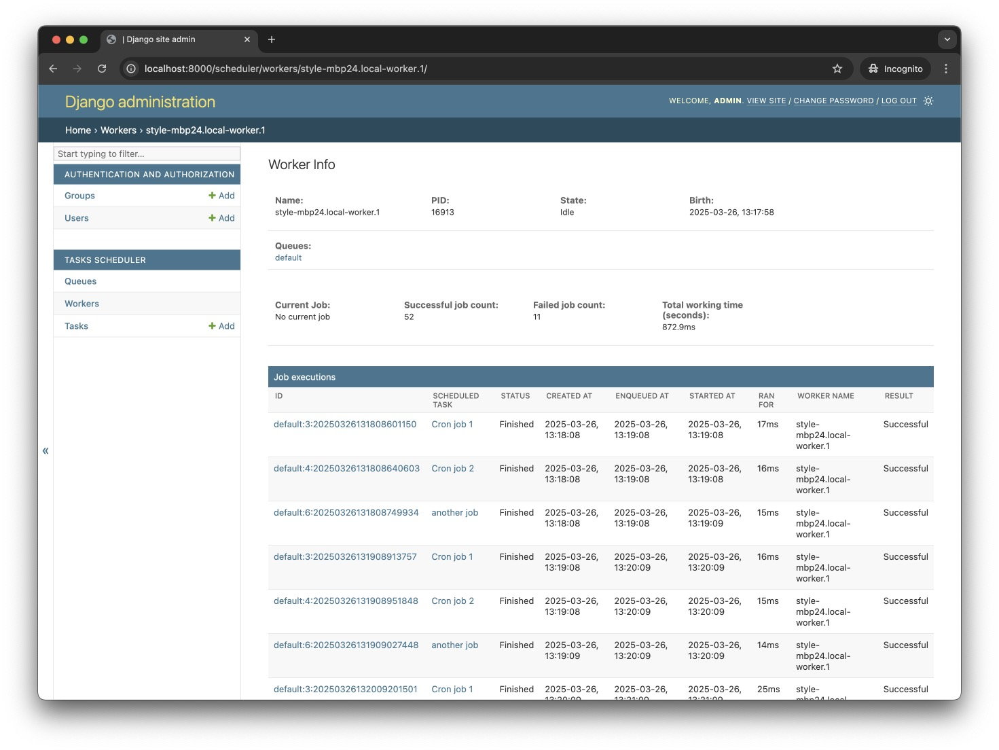

Usage¶
Enqueue jobs from code¶
from scheduler import job
@job()
def long_running_func():
pass
long_running_func.delay() # Enqueue function in "default" queue
Specifying the queue where the job should be queued:
@job('high')
def long_running_func():
pass
long_running_func.delay() # Enqueue function in "high" queue
You can pass in any arguments that RQ's job decorator accepts:
from scheduler import job
@job('default', timeout=3600)
def long_running_func():
pass
long_running_func.delay() # Enqueue function with a timeout of 3600 seconds.
You can set in settings.py a default value for DEFAULT_JOB_TTL and DEFAULT_JOB_TIMEOUT.
# settings.py
SCHEDULER_CONFIG = SchedulerConfiguration(
DEFAULT_SUCCESS_TTL=10 * 60, # Time To Live (TTL) in seconds to keep successful job results
DEFAULT_FAILURE_TTL=365 * 24 * 60 * 60, # Time To Live (TTL) in seconds to keep job failure information
DEFAULT_JOB_TTL=10 * 60, # Time To Live (TTL) in seconds to keep job information
DEFAULT_JOB_TIMEOUT=5 * 60, # timeout (seconds) for a job
)
Managing tasks through the Django Admin¶
Viewing list of scheduled tasks¶

Viewing details of a scheduled task¶
It is possible to view list of executions of a task, as well as the details of a specific execution. 
Scheduling a task Through django-admin¶
- Sign in to the Django Admin site (e.g., http://localhost:8000/admin/) and locate the
Tasks Schedulersection. - Click on the Add on
Tasks - Enter a unique name for the task in the Name field.
- Select the task type, and according to the type, the form will change for the scheduling details.
- For
Repeatable task- Enter an Interval, and choose the Interval unit. This will calculate the time before the function is called again.
- In the Repeat field, enter the number of times the job is to be run. Leaving the field empty, means the job will be scheduled to run forever.
- For
Cron task- In the Repeat field, enter the number of times the job is to be run. Leaving the field empty, means the job will be scheduled to run forever.
- In the cron string field, enter a cron string describing how often the job should run.
- For
- In the Callable field, enter a Python dot notation path to the method that defines the job. For the example
above, that would bemyapp.jobs.count - Choose your Queue.
The queues listed are defined in your app
settings.pyunderSCHEDULER_QUEUES. - Enter the time in UTC the job is to be executed in the Scheduled time field.

Optional fields:¶
- Select whether the job should take priority over existing queued jobs when it is queued (jobs waiting to be executed) by using at front.
- Timeout specifies the maximum time in seconds the job is allowed to run. blank value means it can run forever.
- Result TTL (Time to live): The time to live value (in seconds) of the job result.
-1: Result never expires, you should delete jobs manually.0: Result gets deleted immediately.n(wheren > 0) : Result expires after n seconds.
Once you are done, click Save and your job will be persisted to django database.
Support for arguments for tasks¶
django-tasks-scheduler supports scheduling tasks calling methods with arguments, as well as arguments that should be calculated in runtime.

Viewing queue statistics¶

Viewing queue specific registry jobs¶

Viewing workers list¶

Viewing worker details¶

Enqueue jobs using the command line¶
It is possible to queue a job to be executed from the command line using django management command:
Running a worker to process queued jobs in the background¶
Create a worker to execute queued jobs on specific queues using:
usage: manage.py scheduler_worker [-h] [--pid PIDFILE] [--name NAME] [--worker-ttl WORKER_TTL] [--fork-job-execution FORK_JOB_EXECUTION] [--sentry-dsn SENTRY_DSN] [--sentry-debug] [--sentry-ca-certs SENTRY_CA_CERTS] [--burst]
[--max-jobs MAX_JOBS] [--max-idle-time MAX_IDLE_TIME] [--with-scheduler] [--version] [-v {0,1,2,3}] [--settings SETTINGS] [--pythonpath PYTHONPATH] [--traceback] [--no-color] [--force-color]
[--skip-checks]
[queues ...]
More information about the different parameters can be found in the commands documentation.
Running multiple workers as unix/linux services using systemd¶
You can have multiple workers running as system services.
To have multiple scheduler workers, edit the /etc/systemd/system/scheduler_worker@.service
file, make sure it ends with @.service, the following is example:
# /etc/systemd/system/scheduler_worker@.service
[Unit]
Description = scheduler_worker daemon
After = network.target
[Service]
WorkingDirectory = {{ path_to_your_project_folder } }
ExecStart = /home/ubuntu/.virtualenv/{ { your_virtualenv } }/bin/python \
{{ path_to_your_project_folder } }/manage.py \
scheduler_worker high default low
# Optional
# {{user to run scheduler_worker as}}
User = ubuntu
# {{group to run scheduler_worker as}}
Group = www-data
# Redirect logs to syslog
StandardOutput = syslog
StandardError = syslog
SyslogIdentifier = scheduler_worker
Environment = OBJC_DISABLE_INITIALIZE_FORK_SAFETY = YES
Environment = LC_ALL = en_US.UTF-8
Environment = LANG = en_US.UTF-8
[Install]
WantedBy = multi-user.target
After you are done editing the file, reload the settings and start the new workers:
You can target a specific worker using its number: